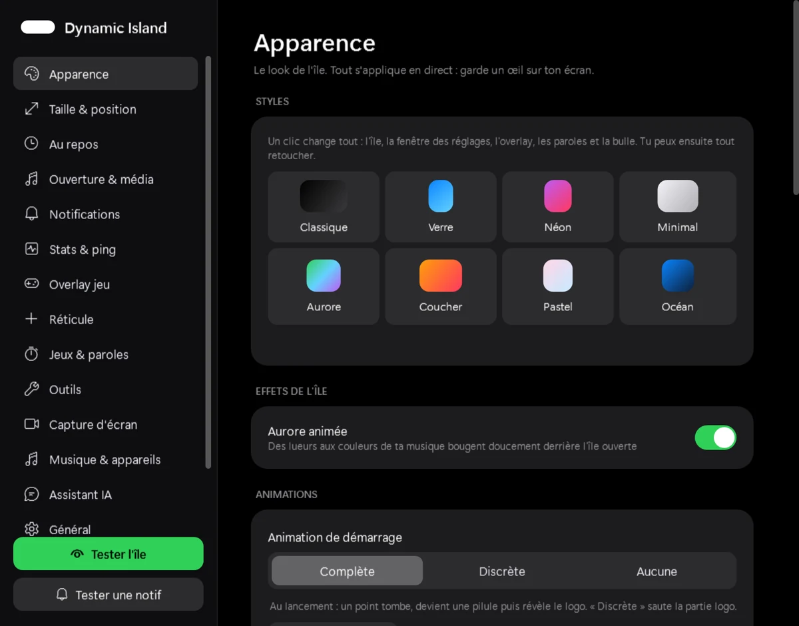
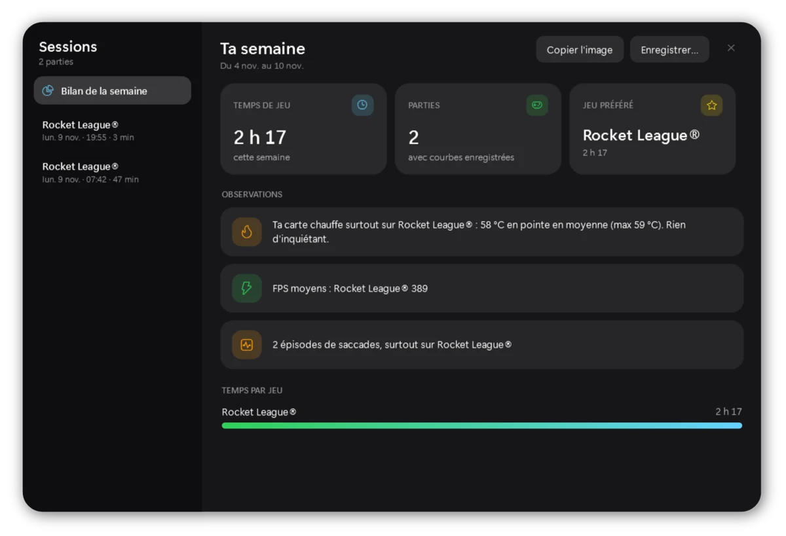
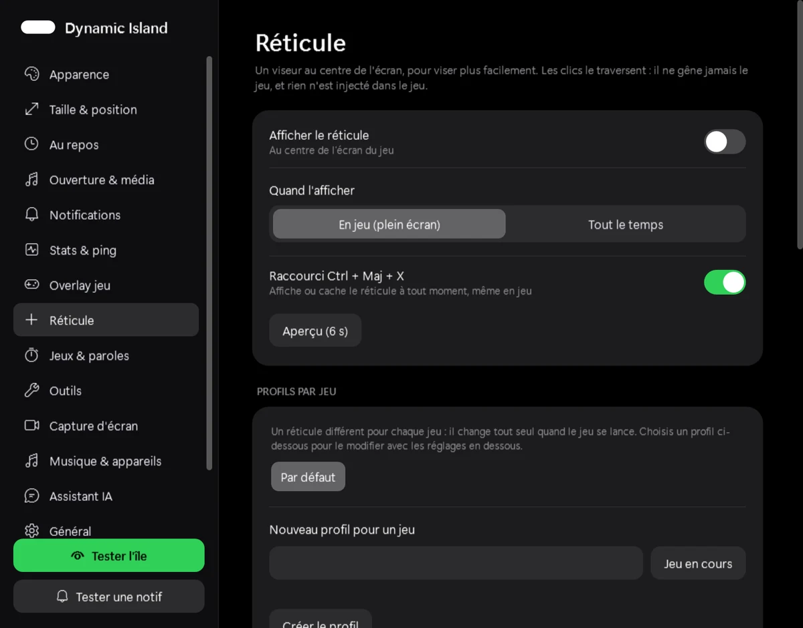
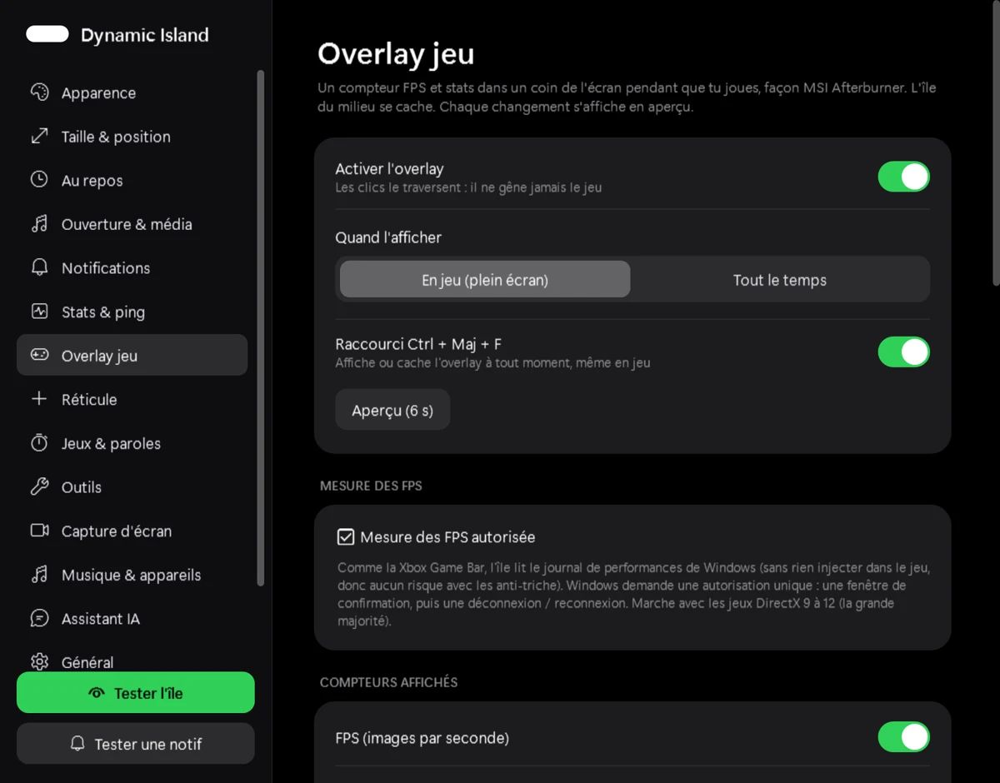

Musique, paroles, stats de jeu, overlay FPS, réticule, instant replay et assistant IA, dans une île animée posée en haut de ton écran.
Windows 10 / 11 · environ 32 Mo · mises à jour automatiques · licence nécessaireElle reste discrète, s'ouvre quand tu en as besoin, et se cache toute seule pendant tes jeux si tu le veux.
Pochette, contrôles, couleurs du morceau et paroles synchronisées. Un halo s'allume à chaque changement de titre.
Processeur, carte graphique, mémoire, températures et ping, au survol de l'île.
Un compteur de FPS dans un coin de l'écran, sans rien injecter dans le jeu : compatible avec les anti-triche.
Un viseur au centre de l'écran : formes, couleurs, image perso, et un profil différent par jeu.
Garde les dernières secondes de ta partie en mémoire et sauvegarde le moment fort d'un raccourci.
Pose une question à Claude, ChatGPT, Gemini ou d'autres, avec tes propres clés. L'île connaît ton média et ton PC.
FPS, températures et saccades de chaque partie, et un bilan à partager en image.
Notifications Windows, presse-papiers, minuteur, mixeur de volume, indicateur micro et webcam.
Réglable à ton goût : thèmes, couleurs, tailles, animations.




Aucun droit administrateur n'est nécessaire.
Récupère DynamicIsland-win-Setup.exe avec le bouton ci-dessous (32 Mo).
Il installe l'île (et .NET 8 si besoin) puis la démarre. Si Windows affiche « SmartScreen », clique sur Informations complémentaires puis Exécuter quand même : l'appli n'est pas encore signée numériquement.
Colle ta clé de licence quand l'île la demande. Les mises à jour suivantes se font toutes seules.
Toutes les versions : page des versions
Les réponses courtes.
Dynamic Island demande une clé de licence personnelle. Pour en obtenir une, contacte l'auteur via sa page GitHub.
Windows 10 (version 2004 ou plus récente) et Windows 11. L'installateur ajoute .NET 8 tout seul si ton PC ne l'a pas.
L'overlay et le réticule sont de simples fenêtres posées par-dessus l'écran. Rien n'est injecté dans les jeux, comme la Xbox Game Bar.
L'essentiel reste sur ton PC. Ce qui peut en sortir (licence, mises à jour, paroles, assistant IA…) est détaillé dans la politique de confidentialité. Il n'y a ni publicité ni outil d'analyse.
Oui. Ils sont gardés dans ton dossier utilisateur, et une copie de sécurité est faite à chaque nouvelle version.
Paramètres Windows → Applications → Dynamic Island → Désinstaller. Tes réglages restent dans %AppData%\DynamicIsland tant que tu ne supprimes pas ce dossier.